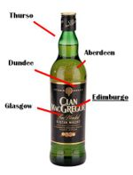
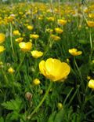
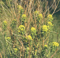
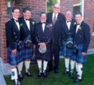
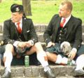
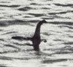

De: La Frikipedia, la enciclopedia extremadamente seria.
De: La Frikipedia, la enciclopedia extremadamente seria. De: La Frikipedia, la enciclopedia extremadamente seria.
| De la serie Países del planeta tierra: | |||||
| Scotland Alba Escocia | |||||
|---|---|---|---|---|---|
| |||||
| Lema: Faldas y Gaitas; ¿necesita algo más el ser humano? | |||||
| Himno: Saca el Güisqui Cheli [1]
| |||||
| 
Click para ampliar | |||||
| Capital | Edimburgo | ||||
| Mayor ciudad | Cutty Sark | ||||
| Lenguas oficiales | Inglés, Inglés etílico (escocés) | ||||
| Gobierno | Esclavitud británica | ||||
| Highlander | Alex Salmond | ||||
| Área | Dentro del Yunaited Quindom | ||||
| Población | Cinco millones de faldas | ||||
| Moneda | Libra | ||||
| Zona horaria | Zig-zag | ||||
| Dominio Internet | .hips | ||||
| Código telefónico | ^-^
| ||||
| Glasgow Power Rangers | |||||
Escocia es una de las cuatro naciones que componen el Reino Hundido de Gran Bretaña e Islandia del Norte.
Fue independiente hasta la expulsión del Conde Oleguer en 1707, el cual fue desterrado a Cataluña donde, años después, se encargaría de salir a la calle con un megáfono a predicar la Guerra de Sucesión Española.
En la actualidad se disputa la fama de borracho con la isla vecina, Irlanda. Escocia tiene buen whiskey, pero los pubs son el segundo hogar del irlandés medio después de la calle.
Hace unos cuantos milenios Escocia era un lugar apto para la vida, ya que sólo había honrados campesinos que se dedicaban a hacer el tontaco por ahí, bailando en falda para hombre sin calzoncillos, con los güevos colgandero por ahí. Todo era muy bonito hasta que llegaron los romanos. Los romanos llegaron a esas tierras que intentaron conquistar en un mesecito, pero les costó más. Como los británicos eran muy cabezotas, los legionarios se vieron obligados a edificar una muralla a la que llamaron el Muro de Adriano. Éste se había construído a base de todas las páginas de la colección Clásicos de Ken Follett, de modo que todo aquel gaélico invasor se dormía al ver tan inmensa cantidad de milimétricas letras.
Luego cayó el Imperio Romano y llegó la gran Edad Media. Ya no había tiranos procedentes de Italia, ahora eran rudos caballeros descendientes de trovadores normandos (que con suerte se habían liado con alguna vikinga hembra dominanta) que cansados de la monotonía de la hora del té, del "cambio de la Guardia" y de los scketches de los Monty Python se habían vestido de sport y hacían bonitas excursiones al norte para propagar su religión: el feudalismo parlamentario. En una de ellas, se detuvieron al llegar a un campamento romano abandonado donde se podía leer, en un inglés defectuoso "In may Kountri yur noth rezaybed welh"[2](En mi país no eres bien recibido). Estaba claro; habían llegado a Escocia.
Resulta que por aquellos tiempos, el líder de los escoceses era nada más que el mismísimo Mel Gibson, protagonizando a William Wallace, un guerrero melenudo que en sus tiempos libres se pintaba la cara con los colores del Depor, club del que ya era socio días antes de nacer. Ésto era un verdadero problema para los hombres del taimado rey de Inglaterra Eduardo I. Los primeros ataques ingleses eran "coser y cantar", ya que dejanban un trozo de queso en el suelo y salían 20.000 campesinos escoceses perfectamente desarmados y desprotegidos. Wallace tomó cartas en el asunto y formó a un súper-ejército de piojosos con lanzas de madera y con espadas viejas compradas a veteranos de la Reconquista española. Vencieron finalmente las tropas esocesas con el apoyo del que se había proclamado rey de esas tierras por parte de Escocia: Roberto el Bruto. Todo ocurrió en la Batalla de Stirling, en la que los hombres de William vencieron intimidando a los ingleses con la táctica que varios expertos de historia militar han definido como "La de enseñar el ojal", consistente en bajarse las faldas y mostrar el culo. Los ingleses se vinieron abajo ya que todos se habían educando leyendo novelas de caballería en las que lo más grosero que podía pasar era que el escudero del protagonista se partiera la nariz al tropezar con una piedra.
Después de estos acontecimientos, Escocia era plenamente independiente. Inglaterra se puso a buscar trapos sucios. Y los encontró: el kale borroka escocés que dirigía el departamento de "Independencia y barretinas", fue exiliado a Cataluña al ser desbaratados sus planes de proclamación de Glasgow como Nación independiente del estado opresor Scoth-Brite. Después de eso, organizó la guerrilla en en Cataluña durante la Guerra de Sucesión. Así pues, Escocia había perdido la independencia y formó junto a Inglaterra el Reino Unido; tal acontecimiento tuvo lugar tras un partido en Wembley Stadium en el que perdió Inglaterra 0-1 por un autogol de Weyne Rooney.
Escocia en sí es un conjunto de rocas, islas y zonas montañosas llamadas Highlands donde habitan los legendarios Highlanders, guerreros embutidos en sus kilts (o faldas para hombre) y armados con mandobles gigantes. Estos guerreros habitan en lo alto de las colinas para decapitar a hordas de guiris curiosos que buscan al yeti debajo de algún pedrusco.
Hay algunas masas de agua, destacando el Lago Ness donde habita Nessi, una bestia anómala que en el Pleistoceno ganó un combate contra un kraken por el control de la laguna. Nessi es el equivalente al Toro de Osborne español, pero en escocés.
Escocia es un país lleno de cosas. Hacemos una clasificación de esas "cosas" y las dividimos en Flora y en Fauna. La verdad es que la una no podría vivir sin la otra. Por ejemplo: no hay porreros ni cantantes de reggae porque hay mucha humedad como para plantar su combustible
| Imagen | Nombre | Propiedades |
|---|---|---|
|  | Resacosis buenrollae | Cura y evita la resaca (¡por eso los escoceses están siempre de juerga!). La exportación de la semilla está prohibida fuera del país. El legendario alquimista Txumari Alfaro arrancó una muestra para llevarla a su programa y al entrar a España le prohibieron volver a pisar un bar/pub/taberna en su vida. |
|  | Nessilus atractorae | Esta planta atrae (según la leyenda) al mismísimo monstruo del Lago Ness. La venden en la orilla del lago y por motivos obvios no se admiten devoluciones. Es una táctica del Parlamento Escocés (copiada del típico tocomocho español) para sacarle las rupias a las manadas de guiris que visitan el lugar. |
| Imagen | Nombre | Porcentaje | Descripción |
|---|---|---|---|
|  | Borrachos | 85% de la población (incluidos niños y ancianos) | Gente que en vez de mamar de teta o biberón decidieron hacerlo de una botella de White Label. Según la legislación vigente ha de haber un juego de botellas de whisky en casa para mantener la ebriedad en el ambiente. |
|  | Highlanders | 10% de la población | Están en las calles para dar un ápice folklórico al país. Hacen competiciones de gaita con gallegos para ver a quien le estalla antes el pulmón. |
|  | Bestias marinas | 5% de la población | Su máximo exponente es Nessi, el el monstruo de Leganés. Son utilizadas como un señuelo para los guiris que visitan las tierras altas. Al final los turistas se quedan sin ver a su bestia favorita, pero pueden adquirir el peluche o el adorno para el coche en la tienda de recuerdos. |
La música escocesa consiste en un grupo de gaitas chirriantes que hacen eco en algún acantilado. Las gaitas son profanadas tocadas por músicos profesionales reunidos por Alcóholicos Anónimos todos los años para llevar a cabo acciones benéficas, a las que suelen invitar a famosos de la talla de Britney Spears y Samuel Eto'o, entre otros.
La gaita esocesa a las seis y media de la mañana un día de domingo tiene el poder destructivo de catorce bombas termo-nucleares [3], por lo que el uso de estas está permitido después de completar satisfactoriamente los cursos de manipulador armamentístico, conductor de babuínos y un diploma en el cursillo Mentos + Coca-Cola.
Patatas fritas, cortezas de cerdo, cacaueses y demás aperitivos para picar mientras se trasiegan un par de botellitas de güiski y haggis (intestinos de oveja rellenos de organos de oveja y wombats picados y cocidos).
Su economía se basa en las botellas de whisky, turismo en un lago donde salieron unas fotos borrosas y en importar negros escotizados por todo Internet para que sean el demoman de Team Fortress 2.
  Imperios de Europa Imperios de Europa
|
|---|
| Eslovaquia |
Autor(es):